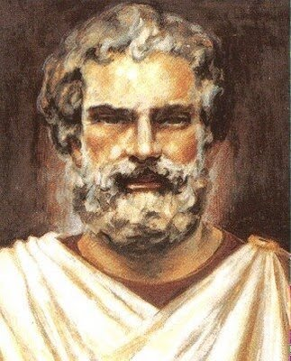
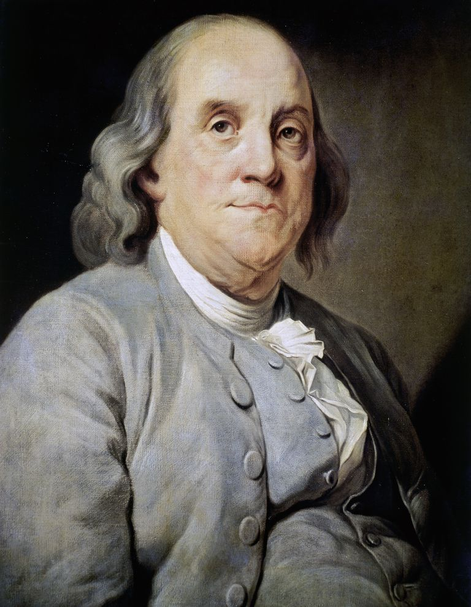
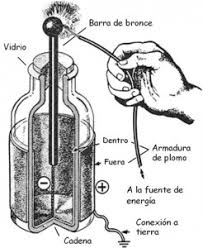
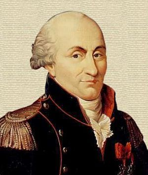
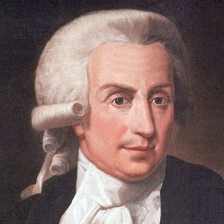
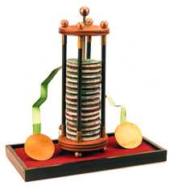

La primera mención de los fenómenos eléctricos se encuentra en los textos egipcios antiguos alrededor del año 2.750 antes de Cristo (hace unos 4.750 años).
TALES DE MILETO
El estudio del origen, fundamentos y características de la electricidad se remonta a los tiempos de los Filósofos Griegos. Tales de Mileto, (Siglo VII a.C.) hizo notar que cuando dos piezas de ámbar son frotadas entre sí, tienen la facultad de atraer o repeler a otro tipo de elementos ligeros. Aristóteles destacó en alguno de sus escritos que un mineral llamado “calamita” o piedra imán, tenía la particularidad de atraer a pesadas piezas de hierro.

Tales de Mileto
BENJAMÍN FRANKLIN
El interés llegó a América donde un hombre llamado Benjamín Franklin (1706-1790) se dedicó a realizar una serie de pruebas con la famosa botella de Leyden. Los trabajos del sabio americano aclaran, en parte las ideas sobre el inexplicable fenómeno, pues consideró a la electricidad como un fluido presente en el interior de todo cuerpo en una proporción determinada. Sólo la existencia de un exceso o un defecto de dicho fluido podía originar propiedades características fácilmente observables. ¿Cómo era ese fluido? ¿Existía alguna relación entre él y la materia? ¿Tenía naturaleza corpuscular u ondulatoria?
Las respuestas continuaban siendo mínimas. Sólo se había adquirido la convicción firme de que la materia contenía en su interior una fuerza que el hombre no había nunca imaginado.

Benjamin Franklin
Botella de Leyden
CHARLES COULOMB
Los fenómenos de atracción entre dos cuerpos electrizados parecían depender explícitamente de la distancia que mediaba entre ellos. Él francés Charles Coulomb (1736-1806) pudo comprobar mediante una sensible balanza de torsión que las fuerzas de atracción y repulsión cumplían una ley análoga a la gravitacional propuesta por Newton.
Fue el primer intento de expresar cuantitativamente la electricidad, pero ello no ampliaba nada sobre su naturaleza, que continuaba siendo un profundo secreto.
Charles Coulomb
LUIGI GALVANI
En 1786 se realizó una experiencia trascendental y en parte fortuita el anatomista italiano Luigi Galvani (1737-1798) estaba realizando en Bolonia unos estudios sobre electricidad animal cuando comprobó que las ancas de rana colgadas de un gancho de cobre sufrían una violenta convulsión si incidentalmente se ponían en contacto con otro metal tal como el hierro.
Galvani dedujo con ello la existencia de electricidad animal en todo organismo vivo, pero su compatriota Alessandro Volta (1745-1827) repitió las mismas experiencias asegurando que el contacto entre los metales era la verdadera causa engendradora de la electricidad.
Luigi Galvani
LA PILA DE VOLTA
En su carta del 20 de marzo de 1800 dirigida al presidente de la Royal Society de Londres señaló el descubrimiento de un “órgano eléctrico artificial” capaz de los efectos más sorprendentes. Este órgano artificial consistía simplemente en una pila o sucesión de discos en el siguiente orden: cobre/ cinc/ cartón empapado en agua salada/ cobre/ cinc.
Había nacido la primera “pila” de la historia. Una pila basada en un fenómeno desconocido cuyas manifestaciones externas permitían sin embargo un gran número de aplicaciones no sólo científicas, sino también técnicas.
La construcción de la pila es un mojón muy importante en la historia de la electricidad ya que lograría revolucionar el concepto tradicional de la química al hacer posible la electrólisis del agua y otras sales fundidas. Una pila que significó el comienzo de una de las disciplinas que más profundamente iba a transformar el futuro científico y técnico del mundo.

Pila de Volta
MICHAEL FARADAY
Muchos cientificos trabajaron en la comprensión de la naturaleza de la electricidad y sus propiedades en la ultima parte del siglo XVIII; pero fue Michael Faraday quien descubrió las propiedades más importantes de la electricidad.
Faraday llevó a cabo algunos estudios sobre la naturaleza de la electricidad y en la década de 1820 construyó el primer motor eléctrico, un aparato que transforma la energía eléctrica en energía mecánica utilizando la interacción de la corriente eléctrica y el magnetismo. Continuando con sus estudios descubrió el fenómeno de la inducción electromagnética, o la producción de corriente eléctrica a partir del cambio de un campo magnético; esto lo llevó a construir el primer dinamo en 1831, un aparato que transforma la energía mecánica en energía eléctrica.
Dínamo de Faraday
THOMAS EDISON
En 1881, Thomas Alva Edison (1847−1931) produce la primera Lámpara Incandescente con un filamento de algodón carbonizado. Este filamento permaneció encendido por 44 horas.
En 1881 desarrolló el filamento de bambú con 1.7 lúmenes por vatios. En 1904 el filamento de tungsteno con una eficiencia de 7.9 lúmenes por vatios. En 1910 la lámpara de 100 w con rendimiento de 10 lúmenes por vatios.
Hoy en día, las lámparas incandescentes de filamento de tungsteno de 100 w tienen un rendimiento del orden de 18 lúmenes por vatios. En 1882 Edison instaló el primer sistema eléctrico para vender energía para la iluminación incandescente, en los Estados Unidos para la estación Pearl Street de la ciudad de New York.
El sistema fue en CD tres hilos, 220−110 v con una potencia total de 30 kw.
Thomas Alva Edison
NIKOLA TESLA
En la década de 1800 y principios de 1900 Nikola Tesla se convirtió en un colaborador importante para el nacimiento de la electricidad comercial por ser considerado el padre de la corriente alterna. Trabajó con Edison y más tarde tuvo muchos desarrollos revolucionarios en el electromagnetismo. Además tenía las patentes que compiten con Marconi por la invención de la radio. Es muy conocido por su trabajos en corriente alterna (CA), motores de corriente alterna, y el sistema de distribución polifásica.
El inventor y empresario George Westinghouse compró y desarrolló el motor patentado de Tesla para la generación de corriente alterna, pensando que el futuro de la electricidad pasaría por este tipo de corriente y así fue. Hoy en día toda la electricidad generada para nuestras casas y viviendas es corriente alterna.
La Bobina de Tesla, que fue creada por Nikola Tesla hacia 1890, es un transformador resonante capaz de producir tensiones muy altas a una elevada frecuencia.
Tesla Coil